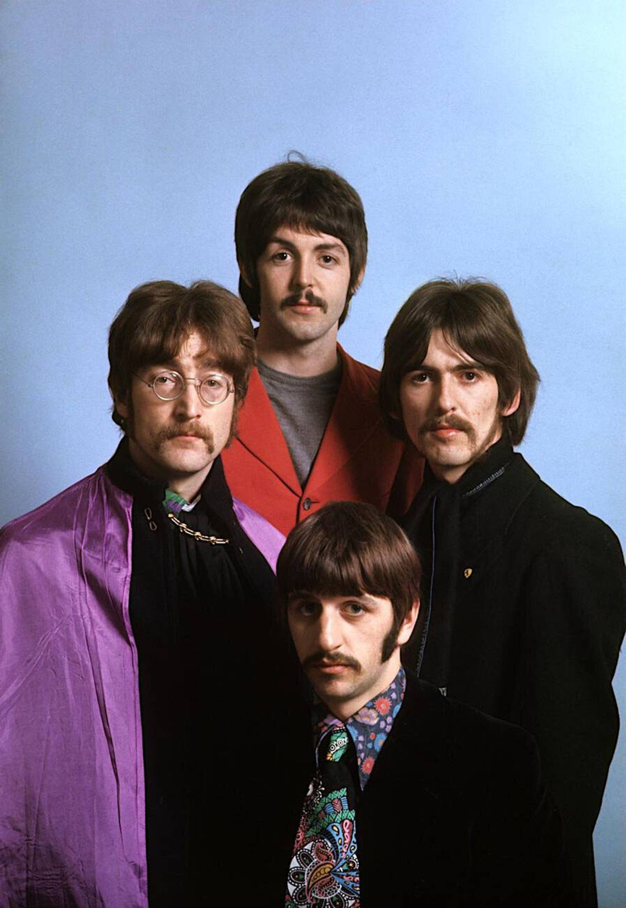
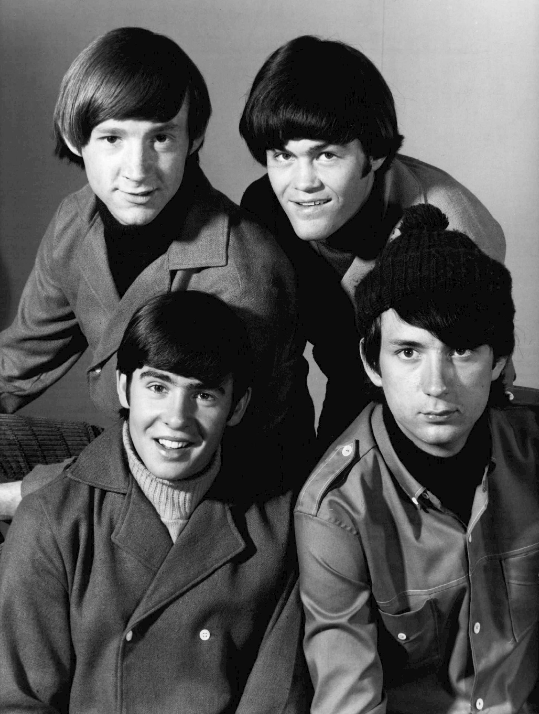

I love:
Music
My Favourite Musicians:

Artist 1: The BeatlesFavourite Track: Lady Madonna
Why I like them:
The Beatles are easily the most influential band in the music industry. In the short seven years the group was releasing albums they had: pioneered recording practices, led the British invasion, and turned popular music into an artform.
Artist 2: The Who
Favourite Track: The Kids Are Alright
Why I like them:
The Who are a standout band who, during their peak throughout the 70s played unlike anything else at the time. With Pete Townshend, the band's "lead" guitarist, playing rhythmic guitar parts whilst the band's rhythm section, Keith Moon on drums and John Entwistle on bass, took over the lead.

Artist 3: The MonkeesFavourite Track: The Girl I Knew Somewhere
Why I like them:
Although The Monkees had originally started as a TV band intended to ride a surge of pop music popularity, the band soon became independent with the release of "Headquarters", their third album, which become a #1 album in the US, as did their next independent album, "Pisces, Aquarius, Capricorn & Jones Ltd.".
I also like things to do with the outdoors, like tramping, hunting and fishing.